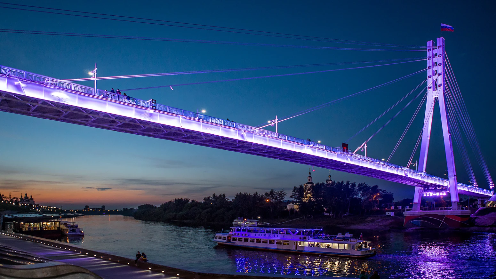
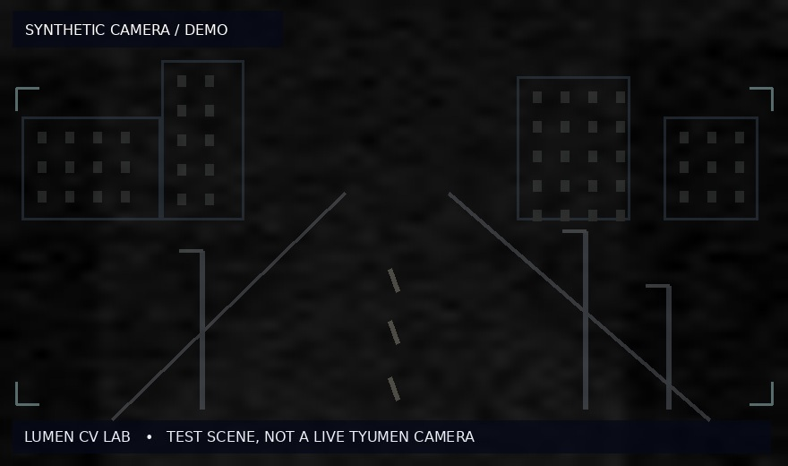

Активные обращения↗
—
Тюмень
Проверьте ночной кадр, выясните, где нужен осмотр, и соберите план выездов на смену.

LUMEN объединяет сигналы, помогает управлять их обработкой и показывает, какие участки требуют внимания.
Сравните длину и средний индекс света двух путей. Схема учебная, расстояния указаны в условных единицах.
Четыре городских ориентира нанесены по координатам. Улицы OpenStreetMap можно включить при подключении к интернету.
Цвета точек отражают учебные обращения. Полевые измерения освещённости отсутствуют.
Настройте условия, выберите число выездов и сохраните очередь осмотров. Для каждого участка виден вклад пяти факторов.
Приоритет = 45% условный дефицит света + 20% сигналы + 15% поток + 10% объекты + 10% погода. Коэффициенты демонстрационные, не обучены по городским авариям.
Выберите учебную сцену или загрузите своё фото. Модель предложит класс, а решение о заявке примет диспетчер.

Фото анализируется на устройстве. После перезагрузки для проверки пользовательского кадра понадобится тот же файл. В резервную копию фотографии не входят.
Нажмите кнопку ниже, чтобы запустить модель на выбранном изображении.
Vision CNN: изображение 48×48, два свёрточных слоя, 4 609 обученных параметров, пять визуальных категорий. Обучение и независимый тест — только на процедурно сгенерированных кадрах. Точность на реальных улицах неизвестна.
Text MLP: текстовые обращения, четыре категории проблем и класс для других тем. Обучение на синтетических примерах; человек принимает окончательное решение.
В каждом режиме проверены одни и те же 400 новых синтетических сцен. Доля верных ответов зависит от экспозиции.
На реальных камерах качество ещё предстоит измерить.
Укажите участок и опишите, что произошло со светом. Перед отправкой вы увидите категорию и приоритет проверки.
Введите сообщение слева и нажмите «Проанализировать». Нейросеть определит характер проблемы и предложит приоритет.
Категории, статусы и участки с наибольшим дефицитом света в текущем наборе данных.
Найдите обращение, проверьте похожие сообщения и обновите статус работы.
Студенческий прототип для кейс-чемпионата Т2 × ТюмГУ. Предложение для пилота в Тюмени.
Один пример проходит через проверку кадра, пересчёт двух маршрутов и план из трёх осмотров. Репетиция использует отдельный учебный набор.
На согласованных участках проверить канал передачи кадров и сопоставить очередь осмотров с агрегированной геоаналитикой. Для этого нужны договорённости с городом и оператором.
Геоаналитика Т2 ↗Недели 1–2 — договорённости и замер исходного процесса, 3–4 — разметка и пороги, 5–6 — параллельная работа, 7–8 — независимый разбор ошибок и решение о продолжении.
Меняйте допущения, чтобы оценить потенциальную пользу. Это калькулятор сценариев, а не фактические данные города или Т2.